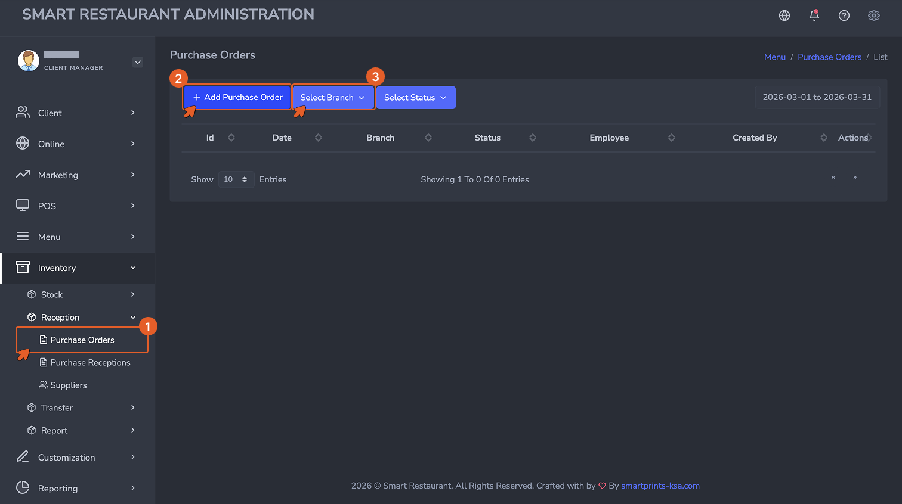
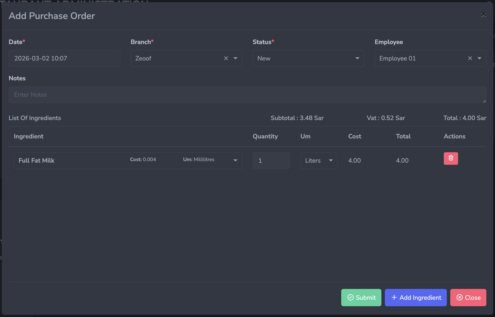

Purchase Orders — Overview
A purchase order is a formal request sent to a supplier for a specific quantity of ingredients. It records what you intend to buy, from whom, and at what cost — before the delivery arrives. Creating purchase orders in the system gives you a procurement trail, allows you to track outstanding orders, and prepares the system to receive the delivery correctly when it arrives.
Note: A purchase order on its own does not affect stock. Stock only increases when the delivery is received and a Purchase Reception is recorded against it.
How to Access
Navigate to Inventory → Purchasing → Purchase Orders, then click + Add to open the purchase order form.

The Purchase Orders list view. Each row represents one order placed with a supplier. The status column shows whether the order is new, partially received, or fully received.
The Purchase Order Form — Field by Field

The Purchase Order form. Select the supplier first, then add each ingredient and the quantity being ordered as a separate line.
- Supplier (Required): The vendor this order is being placed with. Only suppliers registered in the system will appear in the dropdown. If a supplier is missing, return to Step 03 and create their record before proceeding.
- Date (Required): The date the purchase order is being created. Auto-populated with the current date but can be adjusted.
- Branch (Required): The branch that will receive this delivery. Stock from the reception will be added to this branch's inventory.
- Expected Delivery Date (Optional): The date the delivery is expected to arrive. Useful for planning and for flagging overdue orders.
- Notes (Optional): Any instructions or references relevant to this order.
- List of Items: Each ingredient being ordered is added as a line with Item, Quantity, Unit, Unit Cost, and Total Cost (calculated automatically as Quantity x Unit Cost). Click + Add Item to add a new line.
Submitting the Purchase Order
Click Submit to save the purchase order. The order status is set to New and it becomes available for selection when recording the incoming delivery as a purchase reception.
Tip: Purchase orders are most valuable when they are created before the delivery arrives — not after. Creating them in advance lets the receiving team verify the delivery against the order and flag discrepancies immediately.
Overview
Every delivery must be recorded as a purchase reception. A delivery that arrives but is not recorded means the system has no knowledge of that stock — consumption will push those quantities negative faster than expected and your stock levels will diverge from reality.
How to Access
Navigate to Inventory → Purchasing → Purchase Receptions, then click + Add to open the reception form.

The Purchase Receptions list view. Every recorded delivery appears here. Each reception is linked to the purchase order it fulfills.
The Purchase Reception Form — Field by Field

The Purchase Reception form. Link it to the original purchase order, then verify and confirm the quantities actually received.
- Supplier (Required): Must match the supplier on the original purchase order.
- Date (Required): The date and time the delivery was received. Auto-populated but editable. Set this to the actual delivery time for accurate stock history.
- Branch (Required): The branch receiving the delivery. Stock will be added to this branch's inventory upon submission.
- Purchase Order (Required): The original purchase order this reception is fulfilling. Selecting the purchase order pre-populates the expected items and quantities.
- List of Items: Each item received is listed with its expected quantity. Your team updates the quantity to reflect what was actually delivered if it differs from what was ordered. Fields include Item, Expected Quantity, Received Quantity, Unit, and Unit Cost.
Partial and Over-Reception
Deliveries do not always match purchase orders exactly. The system handles both scenarios:
- Partial reception occurs when a supplier delivers less than what was ordered — for example, 8kg of a 10kg order. Record only the quantity actually received. The purchase order status will update to Partially Received, and the remaining quantity can be received in a subsequent reception.
- Over-reception occurs when a supplier delivers more than what was ordered. Record the actual received quantity. The system will add the full received amount to stock regardless of what the order specified.
Always record what physically arrived — not what was ordered. Stock accuracy depends on receptions reflecting reality.
Generating a Reception Directly from a Purchase Order
You can create a reception without going through the Purchase Receptions menu. Open the Purchase Orders list, click the view icon on any order, then click + Generate Purchase Reception at the bottom of the order details. This opens a pre-filled reception form linked to that order, saving you from entering the supplier, branch, and items manually.

Click the view icon on a purchase order to open its details.

Click + Generate Purchase Reception to create a pre-filled reception directly from the order.
Submitting the Reception
Click Submit to save the reception. Stock levels for all received ingredients increase immediately at the selected branch. The linked purchase order status updates to Received or Partially Received depending on whether the full order quantity was fulfilled.
Important: Once a reception is submitted, stock levels update immediately. Verify quantities carefully before submitting — corrections after the fact require a manual stock adjustment and leave an audit trail entry explaining the change.